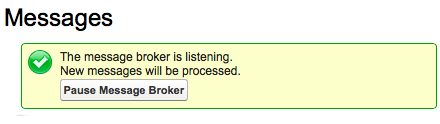
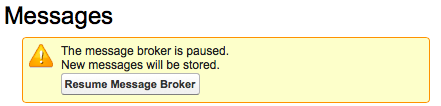
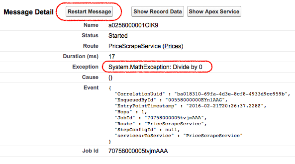
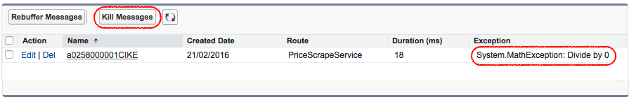
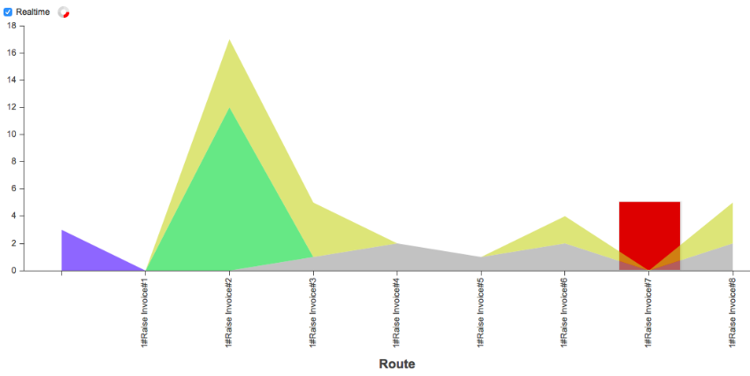

Configuration and Overview
You can use point and click to design and configure your services. More specifically, you
can:
- Arrange service steps into a logical processing sequence
- Combine two or more processing sequences by using PubSub or Branching techniques.
- Employ services delivered via third party Salesforce packages
- Enqueue a test message to a specific Sequence.
You can use point and click to operate and monitor your services. More specifically, you
can:
Pause the framework.

Resume the framework.

Restart messages. (after correcting)

Rebuffer and Kill messages.

Monitor the system health.

- Monitor related messages.
- Monitor processing details within a processing sequence